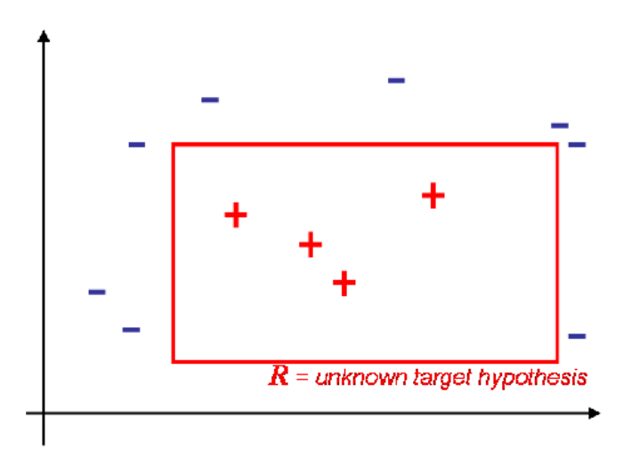
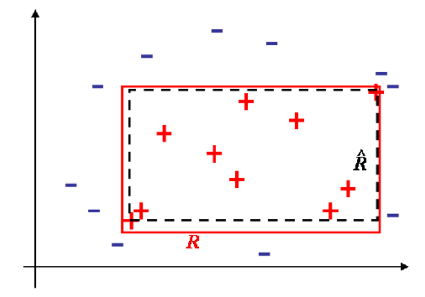
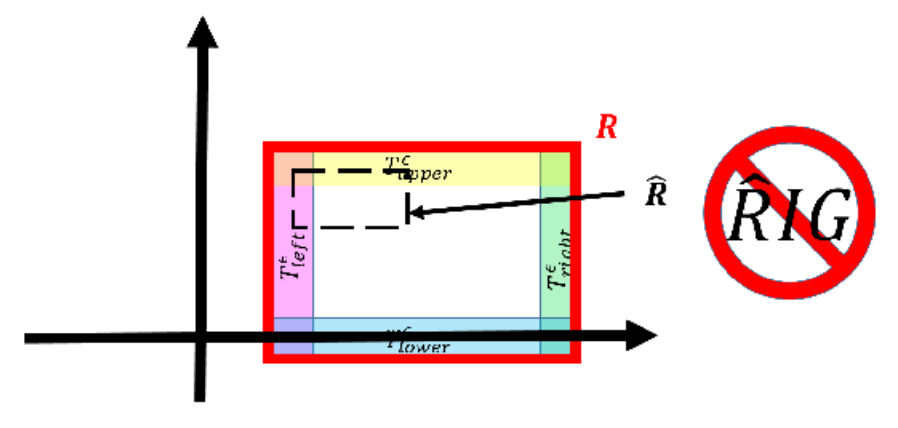
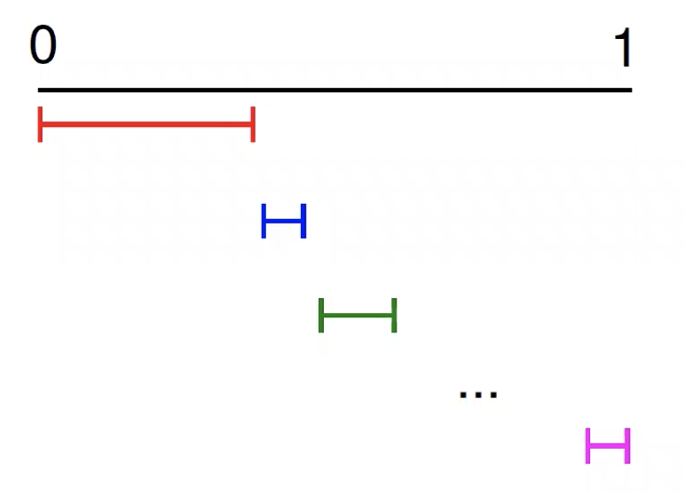
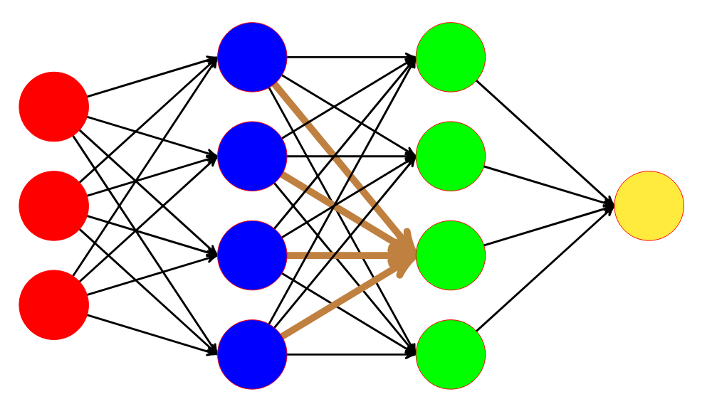
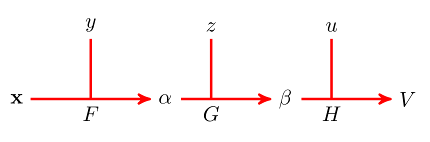
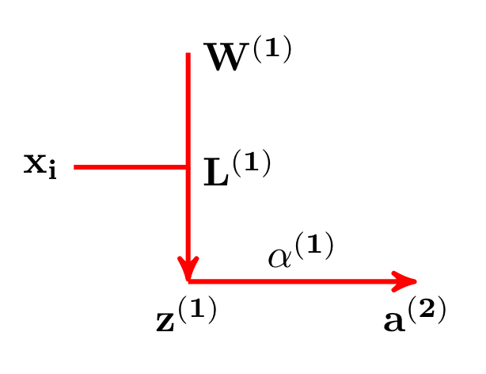
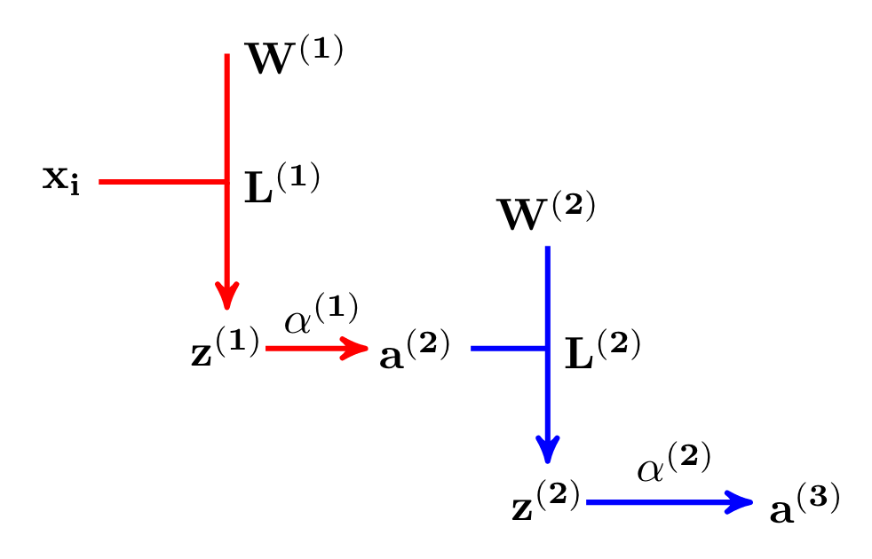
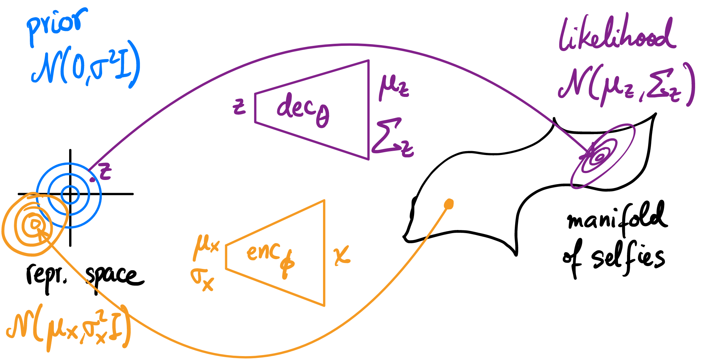
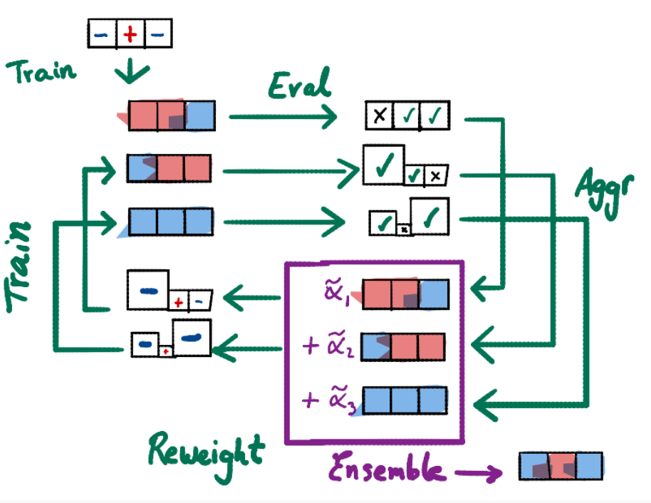

Machine Learning Notes
Lecture 12-13: PAC Learning and VC Theory
Generalization error and empirical error
- Generalization error: \( R(\hat{c}) := \mathbf{P}(\hat{c}(X)\neq c(X)) \) not computable by the learner
- Empirical error: \( \hat{R}_n(\hat{c}) := \frac{1}{n} \sum_{i \leq n}{1_{\hat{c}(x_i) \neq c(x_i)}} \)
The empirical risk is an unbiased estimator of the expected risk since \( \mathbb{E}_{X = (X_1, X_2, .., X_n)} [\hat{R}_n (\hat{c}(X)) ] = \frac{1}{n} \sum_{i \leq n}{ \mathbb{E} ( 1_{\hat{c}(x_i) \neq c(x_i)}) } = \frac{1}{n} \sum_{i \leq n}{ \mathbf{P}(\hat{c}(x_i) \neq c(x_i)}) = \mathbf{P}(\hat{c}(x_i) \neq c(x_i)) \)
Some terminology:
- Concept: A concept is a subset of \( X \) that maps to 1, the remaining values of \( X \) mapping to 0
- Concept class: a set of concepts we wish to learn
- Hypothesis class: Another set of concepts we use to learn a target concept from the concept class
The target concept correctly maps all values of \(X \) (in the deterministic case).
The PAC Learning Model
A learning algorithm \(A \) can learn a concept \( c \) from \(C \) if, given as input a sufficiently large sample, it outputs a hypothesis that generalizes well with high probability
Definition
A learning algorithm \(A \) can learn a concept \(c \) if there is a polynomial function \( poly(\cdot, \cdot, \cdot )\) such that
- For any distribution \( D\) on \( X\) and
- for any \( 0 < \epsilon < \frac{1}{2}, 0 < \delta < \frac{1}{2}\)
if \( A\) receives as input a sample \( Z\) of size \( n \geq poly(\frac{1}{\epsilon}, \frac{1}{\delta},\text{size}(c)) \) then \(A \) outputs \(\hat{c} \) such that
\[ \mathbf{P}_{Z \sim D^n} (R(\hat{c}) \leq \epsilon ) \geq 1 - \delta \]
A concept class \(C \) is PAC learnable from a hypothesis class \( H\) if there is an alogrithm that can learn any concept in \(C \) using a hypothesis from \(H \).
Example: Axis-aligned rectangles are PAC learnable


Where the algorithm \( A\) outputs the smallest fitting rectangle \(\hat{R} \).
To prove learnability we show that \(\mathbf{P} (R(\hat{R}) \leq \epsilon ) \geq \mathbf{P}(\hat{R}IG) \geq 1-4\exp(-\frac{n\epsilon}{4}) \geq 1-\delta \)
where the last inequality implies that \( n\geq \displaystyle\frac{4}{\epsilon} \ln\frac{1}{\delta} \geq \displaystyle\frac{4}{\epsilon}\frac{1}{\delta} \)
\(\hat{R}IG \) is the event that a rectangle intersects all four strips (upper, lower, left, right strips) where each strip has probability mass distribution \(\displaystyle\frac{\epsilon}{4} \). The following rectangle, for example, is not RIG.

To show that \(\mathbf{P} (R(\hat{R}) \leq \epsilon ) \geq \mathbf{P}(\hat{R}IG) \), or that the event RIG implies the former, we prove the contrapositive:
\( \mathbf{P}_{S \sim D^m} (R(R_s) > \epsilon) \leq \mathbf{P}_{S \sim D^m} (\cup_{i = 1}^{4} \{ R_s \cap r_i = \emptyset \} ) \leq \sum_{i=1}^{4} \mathbf{P}(\{ R_s \cap r_i = \emptyset \}) \text{ (by the union bound)} \leq 4(1 - \epsilon/4)^{m} \leq 4\exp{(-m\epsilon/4)} \text{ (since } 1-x \leq e^{-x} ) \)
which means that if the error area is to be larger that \( \epsilon \) then the learned rectangle cannot intersect all strips (otherwise the error area of the rectangle will be less than \( \epsilon \)).
\( 4\exp{(-m\epsilon/4)} \leq \delta \Leftrightarrow m \geq \frac{4}{\epsilon}\log{\frac{4}{\delta}} \) since log is subpolynomial then we can change the bound by replacing \( \log{\frac{4}{\delta}} \) to \( \frac{4}{\delta} \)
Universal concept class
The universal concept class, i.e. the concept class formed by all subsets of binary vectors of fixed length, is not PAC learnable but the proof is hard.
Consistent hypothesis for finite hypothesis classes
Let \( C\) be a finite concept class and assume that \( \mathcal{H} = C \). Let \( \mathcal{A} \) be an algorithm that returns a consistent hypothesis \( \hat{c} \) (i.e. \( \forall n < \infty: R_n(\hat{c}) =0 \)) for any target concept \( c \in \mathcal{C} \)
and any i.i.d sample \(\mathcal{Z} \). For any \(\epsilon, \delta > 0 \) if \[ n \geq \frac{1}{\epsilon} (\log|\mathcal{H}| + \log{\frac{1}{\delta}} ) \] then
\( \mathbf{P}(R(\hat{c}) \leq \epsilon ) \geq 1-\delta \).
Proof:
\( \mathbf{P}(R(\hat{c}) > \epsilon) \leq \mathbf{P}\{ \max_{c \in \mathcal{C}: R_n(c) = 0} R(c) > \epsilon \} = \mathbb{E}\{ \displaystyle I_{\max_{c \in \mathcal{C}: R_n(c) = 0 } R(c) > \epsilon } \} = \mathbb{E}\{ \max_{c \in \mathcal{C}} I_{R(c)>\epsilon}I_{R_n(c) =0} \} \leq \mathbb{E}\{ \sum_{c \in \mathcal{C}} I_{R(c)>\epsilon}I_{R_n(c) =0} \} \leq \mathbb{E}\{ \sum_{c \in \mathcal{C}: R(c) > \epsilon} I_{R_n(c) =0} \} \leq |\mathcal{C}|(1-\epsilon)^n \leq |\mathcal{C}|\exp(-\epsilon n) \leq \delta \)
Useful Inequalities
- \( R(\hat{c}^*_{n}) - \inf_{c \in \mathcal{C}}R(c) < 2\sup_{c \in \mathcal{C}}|\hat{R}_n(c) - R(c)| \) where \( \hat{c}^*_n = \arg \min_{c \in \mathcal{C}} \hat{R}_n(c) \)
- \( \forall \epsilon > 0, \ \mathbf{P}(|\hat{R}_n(c) - R(c)| > \epsilon) \leq 2|\mathcal{C}|\exp{(-2n\epsilon^2)} \)
- \( \mathbf{P}(R(\hat{c}^*_n) - \inf_{c \in \mathcal{C}}R(c) > \epsilon ) \leq 2|\mathcal{C}|\exp{(-\frac{n\epsilon^2}{2})} \) can be demonstrated from the two above
The proof for (1) follows:
Let \(c^* \in \arg \min_{c \in \mathcal{C}} R(c) \text{ and } \hat{c} \in \arg \min_{c \in \mathcal{C}} \hat{R}_n(c) \) then \( R(\hat{c}) - \inf_{c \in \mathcal{C}} R(c) = ( R(\hat{c}) - \hat{R}_n(\hat{c}) ) + (\hat{R}_n(\hat{c}) - R(c^*)) \leq ( R(\hat{c}) - \hat{R}_n(\hat{c}) ) + (\hat{R}_n(c^*) - R(c^*)) \)
note that both parenthesized terms are each less than \( \sup_{c \in \mathcal{C}} |R(c) - \hat{R}_n(c)| \), which completes the proof.
The proof of (2) requires Hoeffding's inequality (Foundations of Machine Learning by Mohri et al):
Let \(X_1, ..., X_m \) be independent random variables with \(X_i \) taking values in [\(a_i, b_i\)] for all \( i\in [m] \). Then for any \(\epsilon > 0 \), the following inequalities hold for \(S_m = \sum_{i=1}^{m}X_i \),
\[ \mathbf{P}(S_m - \mathbb{E}[S_m] \geq \epsilon ) \leq e^{-2\epsilon^2/\sum_{i=1}^{m}(b_i - a_i)^2} \]
\[ \mathbf{P}(S_m - \mathbb{E}[S_m] \leq -\epsilon ) \leq e^{-2\epsilon^2/\sum_{i=1}^{m}(b_i - a_i)^2} \]
Now using the fact \(n\hat{R}_n(\hat{c}) = \sum_{i = 1}^{n} 1_{c(x_i) \neq \hat{c}(x_i)} =S_n \) and \(X_i = 1_{c(x_i) \neq \hat{c}(x_i)} \) as well as the union bound completes the proof.
Problem 3 (Learning concentric circles) from the HW:
Consider the instance space \(\mathcal{X} = \mathbb{R}^2 \) and the hypothesis class \( \mathcal{C} = \{\mathcal{C}_r : r \in \mathbb{R} \} \) consisting of all indicator functions of circles with center at (0, 0):
\[ C_r(\mathbf{x}) = \begin{cases}
0 & ||\mathbf{x}||_2 > r \\
1 & ||\mathbf{x}||_2 \leq r
\end{cases} \]
Fix some \(r^* \in \mathbb{R} \) and consider the target classifier \(c^* = C_{r^*} \). Let \(X_1, X_2, ... \) be i.i.d random variables taking values in \(\mathbb{R}^2 \) and let \(Y_i := c^*(X_i) \).
Moreover, for \( n \in \mathbb{N} \), let \(\hat{c}_n := C_{r_\min^n} \) be the tightest fitting consistent circle with
\[ r_\min^n := \underset{i \leq n, Y_i = 1}{\max} ||X_i||_2 \]
1. Let \( \epsilon > 0 \), and assume there exists a unique \( r_{\epsilon}^+ \in \mathbb{R}\) s.t. \(\mathbf{P}(r_{\epsilon}^+ < ||X_i||_2 \leq r^*) = \epsilon \). Show that \(\mathbf{P}(r_{\min}^n \leq r_{\epsilon}^+) = (1 - \epsilon)^n \)
Ans: \(\mathbf{P}(r_{\min}^n \leq r_{\epsilon}^+) = \mathbf{P}(\underset{ i \leq n, Y_i = 1}{\bigwedge} ||X_i||_2 \leq r_{\epsilon}^+) = \displaystyle\prod_{i=1}^{n} \mathbf{P} (||X_i||_2 \leq r_{\epsilon}^+) \) since by definition \( ||X_i||_2 \leq r^* \) then the probability mass of \( ||X_i||_2 \) is distributed in \([0, r^*] \) thus
\( \displaystyle\prod_{i=1}^{n} \mathbf{P}(||X_i||_2 \leq r_{\epsilon}^+) = \displaystyle\prod_{i=1}^{n} (1 - \mathbf{P}(r_{\epsilon}^+ < ||X_i||_2 \leq r^*)) = (1-\epsilon)^n \)
2. Show that if \( n \geq \frac{1}{\epsilon}\log{\frac{1}{\delta}} \), then \(\mathbf{P}(r_{\min}^n \leq r_{\epsilon}^+) \leq \delta, \text{ for } \delta > 0 \).
Ans: Alternatively show the contrapositive: \( \mathbf{P}(r_{\min}^n \leq r_{\epsilon}^+) > \delta \Rightarrow n < \frac{1}{\epsilon}\log{\frac{1}{\delta}} \). We have \( (1-\epsilon)^n > \delta \Rightarrow e^{-n\epsilon} > \delta \Rightarrow n < \frac{1}{\epsilon}\log{\frac{1}{\delta}} \)
3. Show that \( \mathcal{C} \) is efficiently PAC learnable. Hint: show that \( \mathbf{P}(R(\hat{c}_n) \geq \epsilon) = \mathbf{P}(r_{\min}^n \leq r_{\epsilon}^+) \).
Ans: Observe that \[R(\hat{c}_n) = \mathbf{P}(\hat{c}_n(X_i) \neq c^{*}(X_i) ) = \mathbf{P}(r_{\min}^n < ||X_i||_2 \leq r*) \]
If \( r_{\min}^n \leq r_{\epsilon}^+ \), then by construction,
\[ \mathbf{P}(r_{\min}^n < ||X_i||_2 \leq r^*) \geq \mathbf{P}(r_{\epsilon}^+ < ||X_i||_2 \leq r^*) \]
which means \( R(\hat{c}_n) \geq \epsilon\). Observe that if \(r_{\min}^n > r_{\epsilon}^+ \), then \( R(\hat{c}_n) < \epsilon \). Thus, \( \mathbf{P}(R(\hat{c}_n) \geq \epsilon) = \mathbf{P}(r_{\min}^n \leq r_{\epsilon}) \leq \delta \) for \( n \geq \frac{1}{\epsilon}\log\frac{1}{\delta} \). In other words, for \( n \geq \frac{1}{\epsilon}\log\frac{1}{\delta}\),
\[ \mathbf{P}(R(\hat{c}_n) \leq \epsilon) \geq 1-\delta \]
Thus, \(\mathcal{C} \) is PAC learnable. Moreover, \( \mathcal{C} \) is efficiently PAC learnable since computing \(r_{\min}^n\) is \(O(n)\) and we require at least \(\frac{1}{\epsilon}\log\frac{1}{\delta}\) instances, i.e. the proposed algorithm runs in time polynomial in \(\frac{1}{\epsilon} \text{ and } \frac{1}{\delta}\).
Lecture 11: EM and Non-parametric Bayesian Methods
k -Means Algorithm
Given d-dimensional sample vectors \(\mathcal{X} = \{\mathbf{x_1},..., \mathbf{x_n}\} \) find an assignment function \[ \begin{gather*} c: \mathbb{R}^d \rightarrow \{1, ..., k\} \\ \mathbf{x} \mapsto c(\mathbf{x}) \end{gather*} \]
such that \( \mathcal{R}^{k}(c, \mathcal{Y}) = \sum_{\mathbf{x} \in \mathcal{x}} ||\mathbf{x}-\mu_{c(\mathbf{x})}||^2 \) is minimized where \(\mathcal{Y} \) is the cluster protoypes (centroids) and \(\mu_c \in \mathcal{Y}, c\in \{1, ..., k\}\).
k-Means Algorithm
- Initialize prototypes to arbitrary values
- Assign each \(\mathbf{x}\) to its closest prototype (i.e. define function \(c(\mathbf{x})\))
-
Estimate new prototypes by taking averages of points assigned to the same prototype from the previous step.
-
Iterate until changes of \( c(\mathbf{x}), \mathcal{Y}\) vanish
-
return the prototypes and assignment function
The problem with k-means is that it gives hard assignments without probabilities. To solve this problem where we have k sources producing samples one may use probabilistic mixture models.
Mixture Models
Often, various sources are considered as potential causes for an observed sample. This model class is known as a mixture model with the density for a feature vector \(\mathbf{x} \sim p(\mathbf{x}|\theta) = \)
\[ p(\mathbf{x} | \pi_1,..., \pi_k, \mathbf{\theta_1}, ..., \mathbf{\theta_k} ) = \sum_{c\leq k} \pi_c p(\mathbf{x}|\mathbf{\theta_c}) \]
where the mixture weight \( \pi_c\) denotes the prior probability that a sample is generated by the mixture component \(c\) with parameters \(\mathbf{\theta_c}\).
\( \mathbf{\theta_c}\) depends on what kind of model you have chosen for your mixture component, so if \(p\) is essentially a normal distribution then \(\mathbf{\theta_c}\) specifies variance and mean.
Gaussian Mixtures
-
Gaussian mixtures: parameters \( \mathbf{\theta} = (\mathbf{\mu}, \sum), \ \ p(\mathbf{x}| \mathbf{\mu, \sum} ) = \frac{1}{\sqrt{2\pi}^d}\frac{1}{\sqrt{|\mathbf{\sum}|}}\exp{(-\frac{1}{2}(\mathbf{x-\mu})^T\mathbf{\sum}^{-1} (\mathbf{x - \mu}))} \)
-
Estimate \( \hat{\theta} \) such that it maximizes the likelihood of sample feature vectors \(\mathcal{X} = \mathbf{\{x_1, ..., x_n\}}, \ \ p(\mathcal{X}| \pi_1, ..., \pi_k,\theta_1, ..., \theta_k) = \displaystyle\prod_{\mathbf{x} \in \mathcal{X}}\displaystyle\sum_{c \leq k}\pi_cp(\mathbf{x}|\mathbf{\theta_c}) \)
-
Log-likelihood is often computationally preferable: \( L(\mathcal{X}| \pi_1, ..., \pi_k, \mathbf{\theta_1, ..., \theta_k}) = \displaystyle\sum_{\mathbf{x} \in \mathcal{X}}\log\displaystyle\sum_{c \leq k}\pi_cp(\mathbf{x}|\mathbf{\theta_c}) \)
However, direct maximization is intractable due to sum within logarithm; thus, we introduce latent (hidden) variables, \(z\), which correspond to (expected) data assignments.
Thus the "latent variable form":
-
\(p(z = c) = \pi_c \ \ \) probability of \(\mathbf{x}_i\) being assigned to mixture mode c
-
\( p(x|z = c) = \mathcal{N}(x ; \mu_c, \sigma_c) \)
Expectation Maximization Algorithm
- E-step
- Start with clusters: Mean \(\mu_c\), covariance \(\Sigma_c\), and size \(\pi_c\)
- For each datum \(\mathbf{x_i}\), compute \(\gamma_{\mathbf{x}c}\) the probability that it belongs to \(c\). For the case of GMM, \(\gamma_{\mathbf{x_i}c} = \frac{\pi_c \mathcal{N}(\mathbf{x}_i; \ \mu_c, \sum_c) }{\sum_{c'}\pi_{c'} \mathcal{N}(\mathbf{x}_i; \ \mu_{c'}, \sum_{c'}) } \)
- M-step
- Update mixture weights \( \pi_c = \frac{1}{|\mathcal{X}|}\displaystyle\sum_{\mathbf{x}\in \mathcal{X}} \gamma_{\mathbf{x}c} \)
-
Update means \( \mathbf{\mu}_c = \frac{\sum_{\mathbf{x} \in \mathcal{X}} \mathbf{x}\gamma_{\mathbf{x}c} }{\sum_{\mathbf{x} \in \mathcal{X}} \gamma_{\mathbf{x}c} } \)
-
Update variances: \(\Sigma_c = \sigma_c^2\mathbb{I}, \ \sigma_c^2 = \frac{\sum_{\mathbf{x} \in \mathcal{X}} \gamma_{\mathbf{x}c}(\mathbf{x - \mu_c})^2 }{\sum_{\mathbf{x} \in \mathcal{X} } \gamma_{\mathbf{x}c} }\)
- Repeat until changes small enough
Non-paremetric Bayesian
Recall Beta Distribution
\(Beta(x|a, b) = \frac{1}{B(a,b)} \cdot x^{a-1}(1-x)^{b-1} \), where \(x \in [0, 1];\ \ a, b>0\) a probability distribution over \(x\).
\(B(a, b) = \frac{\Gamma(a)\Gamma(b)}{\Gamma(a+b)}\) is the beta function where \(\Gamma(a) = \int_{0}^{\infty} e^{-x}x^{a-1}dx\)
The multivariate generalization of the beta distribution is the Dirichlet distribution: \[\text{Dir}(\mathbf{x}|\mathbf{\alpha}) = \frac{1}{B(\alpha)} \cdot \prod_{k=1}^n x_k^{\alpha_k - 1}\]
where \(B(\mathbf{\alpha}) = \displaystyle\frac{\prod_{k=1}^n \Gamma(\alpha_k)}{\Gamma(\sum_{k=1}^n \alpha_k)}\) and \(\mathbf{x} \text{ and } \mathbf{\alpha}\) are vectors of length n with only positive components and \(x_i \in [0, 1]\).
Latent clusters
For a finite number of drawings N, we do not have to realize all K clusters. All K clusters will be realized with probability 1, but only when \(N \rightarrow \infty \).
How to handle need of new clusters? Select large K. But then the problem is solved only partially since any specific K might have problems and our belief in K could change as we observe more data points. Solution is thus to use K = \(\infty \) which is a non-parametric bayesian method. In reality this would mean letting the data "speak" how many clusters it needs.
However, recall that the cluster probabilities \( (\rho_1, ..., \rho_K) \sim \text{Dir}(\alpha_1, ..., \alpha_k) \) but we want infinitely large K and that we can not just sample infinitely many points from a dirichlet distribution. We therefore replace \((\rho_1, ..., \rho_K)\) with a probability distribution, which we get from a Dirichlet process.
Dirichlet Process
A Dirichlet process \(DP(\alpha, H)\) is a distribution over probability distributions on a space \(\Theta\). Here,
-
\(\alpha \in \mathbb{R}_{>0}\) is the concentration parameter
-
\(H\) is the base measure on \(\Theta\)
Hence, a sample \(G \sim DP(\alpha, H)\) is a function \(G: \Theta \rightarrow \mathbb{R}_{\geq 0} \text{ s.t. } \int_{\Theta}G(\theta)d\theta = 1 \). The DP(\(\alpha, H\)) is defined by the following property: \[(G(T_1), ..., G(T_K) ) \sim Dir(\alpha H(T_1), ..., \alpha H(T_K))\] for every partition \((T_1, ..., T_K) \text{ of } \Theta\)
Stick-Breaking Process
Observation: sampling \((\rho_1, ..., \rho_K) \sim \text{Dir}(\alpha_1, ..., \alpha_K) \) is equivalent to sampling \(\rho_1 \sim \text{Beta}(\alpha_1, \alpha_2 \cdot \cdot \cdot \alpha_K)\) and \((\rho_2, ..., \rho_k) \sim \text{Dir}(\alpha_2, ..,, \alpha_K)\)
 \(\begin{gather*}
\beta_1 \sim \text{Beta}(\alpha_1, \alpha_2\cdot \cdot \cdot \alpha_K) & \rho_1 &=& \beta_1 \\
\beta_2 \sim \text{Beta}(\alpha_2, \alpha_3\cdot \cdot \cdot \alpha_K) & \rho_2 &=& \beta_2(1 - \beta_1) \\
\beta_3 \sim \text{Beta}(\alpha_3, \alpha_4\cdot \cdot \cdot \alpha_K) & \rho_3 &=& \beta_3(1 - \beta_1)(1 - \beta_2) \\
... & \rho_K &=& 1 - \sum_{i = 1}^{K-1}\rho_i
\end{gather*}
\)
Image shows symbolization of stick breaking where the colored bars represent the beta variables. Note though that \(\mathbf{\alpha} = (\alpha_1, ..., \alpha_K)\) is finite and so alternatively one may want to use the \(Beta(1, \alpha)\) distribution. Only change is that we define \(\rho_K = \beta_K(1 - \sum_{i=1}^{k-1}\rho_i)\). We now say that \(\rho\) is drawn according to GEM distribution, \(\rho \sim GEM(\alpha)\).
Chinese Restaurant Process
- Analogous to drawing samples from a DP
- Customers are observations (data points) \( \theta^{(i)} \), tables are clusters are \(\theta_k\)
- When a new customer arrives he can either:
- Join an existing table with probability \(\propto\) the number of people sitting there
- Start a new table with probability \(\propto \alpha\)
Thus, \[P(\text{customer } n+1 \text{ joins table } \tau |\mathcal{P} ) = \begin{cases}
\frac{|\tau|}{\alpha + n} & \tau \in \mathcal{P} \\
\frac{\alpha}{\alpha + n} & \text{otherwise}
\end{cases} \]
where \(\mathcal{P}\) can be for example \(\{\{1, 2, 4, 7\}, \{3, 6, 8\}, \{5, 9\}, \{10\}\}\) to denote that table \(t_1\) has 4 people, table \(t_2\) has 3 people, and so forth.
The probability of this partition \(\mathcal{P}\) is thus \(P(\mathcal{P}) = \displaystyle \frac{\alpha}{\alpha}\left(\frac{1}{\alpha + 1}\right) \left(\frac{\alpha}{\alpha + 2}\right) \left(\frac{2}{\alpha + 3}\right) \left(\frac{\alpha}{\alpha + 4}\right) \left(\frac{1}{\alpha + 5}\right) \left(\frac{3}{\alpha + 6}\right) \left(\frac{2}{\alpha + 7}\right)\left(\frac{1}{\alpha + 8}\right)\left(\frac{\alpha}{\alpha + 9}\right)\)
Problem 2 from the HW:
Consider the following algorithm for sampling from the Dirichlet process with base distribution \(F_0\) and concentration parameter \(\alpha\).
-
Draw the first sample \(X_1 \sim F_0\)
-
For \(i=2, 3, ...\) draw \[ X_i | X_1, ..., X_{i-1} = \begin{cases}
X \sim \hat{F}_{i-1} & \text{ with probability } p = \frac{i-1}{\alpha +i - 1} \\
X \sim F_0 & \text{ with probability } p = \frac{\alpha}{\alpha +i - 1}
\end{cases}
\]
where \(\hat{F_{i-1}} \) is the empirical distribution of \(X_1, ..., X_{i-1}\)
Find the asymptotics of the number of discrete samples drawn, as a function of the total number of samples drawn: \(X_1, ..., X_n\); or equivalently, the number of occupied tables in the Chinese restaurant metaphor.
Ans: Let the indicator random variable \(I_{e_i}\) signal the event that \(X_i\) is drawn from \(F_0\). Then clearly the anwer is given by \(1+\mathbb{E}[I_{e_2} + ...+I_{e_n} ] = 1+\sum_{i=2}^{n} \frac{\alpha}{\alpha+ i - 1} = \sum_{i=1}^{n} \frac{\alpha}{\alpha+ i - 1} =S(n)\). To find the asymptotics of \(S(n)\), consider the integral \(I(n) = \int_{1}^{n+1}\frac{\alpha}{\alpha + x -1} dx\). After looking at the graph of function \(\frac{\alpha}{\alpha + x - 1}\), it is easy to see that the integral \(I(n)\) is bounded by the sum \(\sum_{i=1}^{n}\frac{\alpha}{\alpha + i -1} = S(n)\) from above and by \(\sum_{i=2}^{n+1}\frac{\alpha}{\alpha+i - 1} = S(n) - 1 + \frac{\alpha}{\alpha + n} \) from below, that is, \[S(n) - 1 +\frac{\alpha}{\alpha+n} \leq I(n) \leq S(n) \forall n > 1\]
which can be reformulated equivalently as \[
I(n) \leq S(n) \leq I(n) + 1 - \frac{\alpha}{\alpha + n} \forall n > 1
\]
then evaluate the integral to get that \(S(n) \sim \alpha \ln(n)\) as \(n \rightarrow \infty\)
Lecture 9-10: Deep Learning
Neural Networks
Neural nets can be represented as a composition of linear and non-linear pointwise activation functions:
-
Linear functions: \(L: \mathbf{x} \mapsto W\mathbf{x} + \mathbf{b}\)
-
Activation functions: \(\mathbf{\alpha}: \mathbf{x} \mapsto (\alpha(x_1), ..., \alpha(x_n) ) \)
where \(\mathbf{x} = (x_1, ..., x_n)\) and \(NN(\mathbf{x}) = \alpha^{(d)}( L^{(d)}(... \alpha^{(2)}(L^{(2)}(\alpha^{(1)}(L^{(1)}(\mathbf{x})) ) ) ) ) = \alpha^{(d)}\circ L^{(d)} \circ ...\alpha^{(2)}\circ L^{(2)} \circ \alpha^{(1)} \circ L^{(1)}(\mathbf{x}) \) using the composition operator.
The three most common activation functions are the ReLU, the hyperbolic tangent, and the sigmoid. It is important to know their graphs.
The reason ReLU is more common than the other two functions is because it suffers less from the problem of vanishing gradients (gradient approaches zero for large positive or extreme negative values). If the gradient is close to zero then you risk that gradient descent does not make progress.
Theorem [Cybenko, 1989]
If \(f:[0,1]^n \rightarrow \mathbb{R} \) is continuous and \(\epsilon > 0\) then there is a NN such that
-
\( NN(\mathbf{x}) = \sum_{i \leq m} \alpha_i \sigma(w_i^T\mathbf{x}+b_i) \)
-
\( \displaystyle\max_{\mathbf{x}} |f(\mathbf{x}) - NN(\mathbf{x})| < \epsilon \)
In words, a neural network with two layers can approximate any continuous non-linear function with arbitrary precision.
Theorem [Lu, 2017]
Any Lebesgue-integrable function \(f: \mathbb{R}^n\rightarrow \mathbb{R}\) can be approximated by a fully connected network, with respect to the L1 (Manhattan) distance, as long as:
- Each layer has \(n+4\) units
-
The activation function is the ReLU
For a binary classification model, the output unit is the sigmoid function \(\displaystyle\frac{1}{1+e^{-x}}\). For multiclass classification with n labels, the outputs are softmax functions \(y_i = \displaystyle\frac{\beta z_i}{\sum_{j \leq n}\exp{(\beta z_j)} }\) where \(z_1, ...,z_n\) are scores.
Training Neural Networks
The problem consists of finding \(\displaystyle\min_{\theta} \sum_{i \leq n} \underbrace{L(y_i, NN_{\theta}(x_i))}_{L(\theta)} \) where \(\theta\) is composed of weights \(W\) and intercepts \(b\) such that \(\theta = (W^1,b^1; W^2,b^2; W^3,b^3) \). Example of loss functions are cross entropy, L1 norm, and L2 norm. For reference, the binary cross entropy loss is defined as \(-\sum_{n=1}^N \{t_n\ln y_n + (1 - t_n)\ln{(1 - y_n)} \}, \ t_n \in \{0, 1\}\) and categorical CE loss as \( - \sum_{n=1}^N \sum_{i=1}^{U}t_{n, i}\cdot \ln{y_{n, i}} \) where U is the number of output nodes.
We can write \(\theta = (w_1^{(1)}, ..., w_{row}^{(1)}; w_1^{(2)}, ..., w_{row}^{(2)}; w_1^{(3)}, ..., w_{row}^{(3)} )\) with the following visualizaiton

where the brown arrows represent \(W^{(2)}_3\). Since the loss function is analytically intractable but easy to differentiate we use gradient descent:
Gradient Descent
\(k \leftarrow 0\)
\(b^{(l)} \leftarrow \mathbf{0} \)
\(w_r^{(l)} \leftarrow \text{Unif}\left([-\frac{1}{\sqrt{u}},\frac{1}{\sqrt{u}} ]\right) \) for \(l \leq d\) and \(r \leq \text{#rows } W^{(l)}\) and \(u\) =#units in previous layer
do {
\( w_{r}^{(l)} \leftarrow w_{r}^{(l)} - \eta(k)\nabla_{w_r^{(l)}} L(\theta) \) for \(l \leq d,\ r\leq \#rows\ W^{(l)}\)
\( k \leftarrow k+1 \)
}
until (test cost - train cost) increases
Recap of Chain Rule
For a function \((x, y, z, u) \overset{M}{\longrightarrow} H(u, G(z, F(x,y)))\)
which can be equivalently drawn as

we have \(\left.\displaystyle\frac{ \partial M}{\partial z} \right|_w = \left.\displaystyle\frac{\partial H }{\partial \beta}\right|_{\beta, u} \left.\displaystyle\frac{\partial G}{\partial z}\right|_{\alpha, z} \) and \(\left.\displaystyle\frac{ \partial M}{\partial y} \right|_w = \left.\displaystyle\frac{\partial H }{\partial \beta}\right|_{\beta, u} \left.\displaystyle\frac{\partial G}{\partial \alpha}\right|_{\alpha, z} \left.\displaystyle\frac{\partial F}{\partial y}\right|_{x, y} \)
To compute the gradient of \(L(\theta) = -\sum_{i\leq n}\text{CE}(y_i, NN(x_i; \theta))\) we follow the rule above. Thus \(\displaystyle\left.\frac{\partial L}{\partial w_r^{(l)}}\right|_{\theta} = \sum_{i \leq n} - \left.\frac{\partial \text{CE}}{\partial w_r^{(l)}}\right|_{y_i, NN(x_i, \theta)} \) where \(\displaystyle\frac{\partial \text{CE}}{\partial w_r^{(l)}} = \displaystyle\frac{\partial \text{CE}}{\partial p_i}\frac{\partial NN}{\partial w_r^{(l)}} \) where \(p_i\) is the output of the neural network. If we represent 1-layer and 2-layer neural networks as
 
then we obtain \(\displaystyle\frac{\partial NN}{\partial w_r^{(l)}} = \displaystyle\frac{\partial \alpha^{(d)}}{\partial z^{(d)}} \frac{\partial L^{(d)}}{\partial a^{(d)}}\frac{\partial \alpha^{(d-1)}}{\partial z^{(d-1)}}\cdot \cdot \cdot \frac{\partial L^{(1)}}{\partial w_r^{(1)}} = \displaystyle\frac{\partial NN^{(l+1)}}{\partial a^{(l+1)}}\frac{\partial \alpha^{(l)}}{\partial z^{(l)}} \)
where \( NN^{(l+1)} \) is the neural network whose input is \(a^{(l+1)}\) and whose output is the same as the original neural network.
Backprop Algorithm
\(d\) = number of layers of the neural network
\(\displaystyle\frac{\partial NN^{(d+1)}}{\partial a^{(d+1)}} = I \)
for \(l = d- 1,...,1 \)
\( \displaystyle\frac{\partial NN^{(l+1)} }{\partial a^{(l+1)} } = \displaystyle\frac{\partial NN^{(l+2)} }{\partial a^{(l+2)} } \frac{\partial \alpha^{(l+1)}}{\partial z^{(l+1)} } \frac{\partial L^{(l+1)} }{\partial a^{(l+1)}} \)
\( \displaystyle\frac{\partial NN}{\partial w_r^{(l)}} = \displaystyle\frac{\partial NN^{(l+1)} }{\partial a^{(l+1)} } \frac{\partial \alpha^{(l)}}{\partial z^{(l)}}\frac{\partial L^{(l)}}{\partial w_r^{(l)}} \)
Observe that \( \displaystyle\frac{\partial \alpha^{(l)}}{\partial z^{(l)}} = \begin{bmatrix}
\frac{\partial \alpha^{(l)}}{\partial z_{1}^{(l)}} & & \\
& \frac{\partial \alpha^{(l)}}{\partial z_{2}^{(l)}} & \\
& & \ddots
\end{bmatrix}
\) and \( \displaystyle\frac{\partial L^{(l)}}{\partial a^{(l)}} = W^{(l)}\) and \(\displaystyle\frac{\partial L^{(l)}}{\partial w_r^{(l)}} = \begin{bmatrix} \mathbf{0} \\ \vdots \\ \mathbf{a}^{(l)} \\ \vdots \\ \mathbf{0} \end{bmatrix} \)
In batch gradient descent, the entire training set is used to compute the gradient of the loss, whereas in mini-batch (also called stochastic) GD only a subset (potentially one instance) of the training set is used to compute the gradient, the observation being \(\sum_{i\leq n} \frac{\partial L(y_i, NN_{\theta}(\mathbf{x_i})) }{\partial w_r^{(l)}} \approx \sum_{i\in S} \frac{\partial L(y_i, NN_{\theta}(\mathbf{x_i})) }{\partial w_r^{(l)}} \) where \(S \subset \{1,...,n\}\). Batch GD has better gradient precision, but it has larger generalization error, less ability to escape local minimum (SGD does better thanks to noise in the small samples), slower improvements, and can not handle large training sets well.
But the question remains whether we are guaranteed to find the minimum loss: \[ \begin{gather*} \min \sum_{i \leq n} L(y_i, NN_{\theta}(x_i)) \\ \Leftrightarrow \\ 0 = \sum_{i \leq n} \nabla_{\theta}L(y_i, NN_{\theta}(x_i)) = \mathbb{\hat{E}}_{X, Y}[\nabla_{\theta}L(y, NN_{\theta}(x))] \approx \mathbb{E}_{X, Y}[\nabla_{\theta}L(y, NN_{\theta}(x))] \end{gather*} \] Hence we want to find \(\theta^*\) such that \(\mathbb{E}_{X,Y}[\left.\nabla_{\theta}L(y, NN_{\theta}(x))\right|_{\theta^*}] = 0 \). Robbins-Monro algorithm provides regularity conditions sufficient for gradient descent to converge. Assume we want \(\theta^*\) such that \(\mathbb{E}_Z[f(Z;\theta^*)]=0 \) then if the following conditions
-
\( \eta(k) \geq 0 \)
-
\( \sum_{k}\eta(k) = \infty \)
-
\( \sum_{k}\eta^2(k) < \infty \)
-
\(\mathbb{E}_Z[f(Z;\theta^*)] < \mathbb{E}_Z[f(Z;\theta)] \forall \theta>\theta^*\)
-
\(\mathbb{E}_Z[f(Z;\theta^*)] > \mathbb{E}_Z[f(Z;\theta)] \forall \theta< \theta^*\)
are fulfilled then \( P(\theta^{(k)} = \theta^*) \rightarrow 1 \) and \(\mathbb{E}[(\theta^k - \theta^*)^2] \rightarrow 0 \) hold for 1D theta as k tends to infinity.
Variational Auto-Encoders
Recall that for binary classification using deep learning that the final layer before the output gives an alternative (compact) representation, \(\mathbf{z}\), of the input \(\mathbf{x}\). So the question arises can we learn a meaningful compact representation without supervision? We assume a measurement space \(\mathcal{X}\) and an encoder, \(\text{enc}_{\theta}\), that maps the measurement space to a representation space \(\mathcal{Z}\). For example, assume \(\mathcal{X}\) consists of images of dogs and cats then the representation space can be all vectors of the form \( \begin{bmatrix} \text{fur color} \\ \text{ear pointiness} \\ \text{eye color} \end{bmatrix} \). There are three criteria for a good representation
-
Informative: given a representation it should be easy to guess the measurement
-
Disentangled: every component in the representation is associated with a distinguised feature
-
Robust: noisy perturbations in the measurement should not substantially affect the representation and vice versa
We begin with the first criteria, informartiveness.
The Infomax Principle (Linsker 1988)
\(z = enc_{\theta}(x)\) must maximize the mutual information \(I(x; z)\), thus one must find \( \text{argmax}_{\theta} I(x;z)\). Note that the amount of information carried by a random variable is given by the entropy \(H(x) = \mathbb{E}_{x}[-\log{p(x)}]\) and that \(I(x;z)= \mathbb{E}_{X, Z}[\log(\frac{p(x,z)}{p(x)p(z)})]\). If \(x = rainy\) and \(z = cloudy\) then there is mutual information shared given by \(I(x;z)\). To formally state the problem: let \(\mathcal{X}\) and \(\mathcal{Z}\) be a measurement and a representation space, respectively. Let \(\mathcal{F} = \{enc_{\theta}: \theta \in \Theta \}\) be a parametric family of functions with \( enc_{\theta} \) mapping \(\mathcal{X}\) to distributions over \(\mathcal{Z} \). The encoder function is defined by \[ \theta^* = \text{argmax}_{\theta}I(x;z) \] where \(z\) is a random variable with distribution \(enc_{\theta}(x)\).
Given the training set \(\{x_1, ..., x_n \} \subseteq \mathcal{X} \) we can do the following approximation \(\text{argmax}_{\theta} I(x;z) = \text{argmax}_{\theta} \mathbb{E}_{X, Z}\left[\frac{p(x, z)}{p(x)p(z)}\right] = \text{argmax}_{\theta}\mathbb{E}_{X, Z}[\log p(x|z)] - \underbrace{\mathbb{E}_{X,Z}[\log p(x)]}_{const.\ wrt.\ \theta} = \text{argmax}_{\theta}\mathbb{E}_{X}\mathbb{E}_{Z|X}[\log p(x|z)] \approx \text{argmax}_{\theta} \sum_{i \leq n} \mathbb{E}_{z|x_i} [\log p(x_i|z)] \).
Note however that informartiveness is not enough since we can trivially allow \(enc_{\theta}\) to be very complex by setting \(Z=\mathbb{R}\) and defining \(enc_{\theta}\) as an injective function from \(\mathcal{X}\) to \(\mathcal{Z}\). However this representation as reals is neither disentangled, since the main features are not distinctly separable by one real number, nor robust since any small perturbation to this real number could map to a different \(x\).
To train a variational autoencoder we define a prior distribution on \(\mathcal{Z}\) given by \(p_{\theta'}(z)\) then we define the likelihood \(p_{\theta}(x|z)\) which we maximize and finally using these two previous distributions we find \(p_{\theta, \theta'}(z|x) \approx q_{\phi}(z|x)\) where the approximate posterior is needed since solving for the exact posterior can be intractable if the likelihood is not a simple function. Note that the neural network given by \(dec_{\theta}\) models the likelihood and that the neural net given by \(enc_{\theta}\) models the posterior as shown here

Training a variational autoencoder
To compute \(\underset{\phi}{\text{argmax}} \sum_{i \leq n} \log p_{\theta', \theta}(x_i) \), that is maximize the likelihood, observe that \( \log_{\theta', \theta} (x_i) = \mathbb{E}_{\mathcal{Z} \sim q_{\phi}(\cdot | x_i)}[\log p_{\theta', \theta}(x_i) ] = \mathbb{E}_{\mathcal{Z} \sim q_{\phi}(\cdot|x_i)}\left[\log \left( \displaystyle\frac{p_{\theta', \theta}(x_i, z)}{p_{\theta', \theta}(z|x_i) } \frac{q_{\phi}(z|x_i)}{q_{\phi}(z|x_i)} \right) \right] =\)
\[ \mathbb{E}_{\mathcal{Z} \sim q_{\phi}(\cdot | x_i)} \left[ \log \left( \frac{p_{\theta', \theta}(x_i, z)}{q_{\phi}(z|x_i)} \right) \right] + \mathbb{E}_{\mathcal{Z} \sim q_{\phi}(\cdot|x_i) }\left[ \log \left( \frac{q_{\phi}(z|x_i)}{p_{\theta', \theta}(z|x_i)} \right) \right] \]
The second term is the Kullback-Leibler divergence which indicates the efficiency with which an approximator distribution models a distribution, in this case \( \mathbb{E}_{\mathcal{Z} \sim q_{\phi}(\cdot|x_i) }\left[ \log \left( \frac{q_{\phi}(z|x_i)}{p_{\theta', \theta}(z|x_i)} \right) \right] = KL(q_{\phi}(\cdot | x_i) | p_{\theta', \theta}(\cdot|x_i)) \). Note that the Kullback-Leibler is non-negative since it measures efficiency. Therefore, we get that the first term is a lower bound, called the ELBO (evidence lower bound).
Note that the ELBO can be rewritten as \(\underbrace{\mathbb{E}_{\mathcal{Z} \sim q_{\phi}(\cdot|x_i)} \left[ \log p_{\theta}(x_i | z) \right]}_{Infomax!} + \underbrace{\mathbb{E}_{\mathcal{Z} \sim q_{\phi}(\cdot | x_i)} \left[ \log \left(\frac{p_{\theta'}(z)}{q_{\phi}(z|x_i)} \right) \right]}_{-KL(q_{\phi}(\cdot | x_i)\ |\ p_{\theta'}(\cdot) )} \) where the second term is a regularization term which helps produce disentangled representations (Chen et al 2018, Isolating sources of disentanglement in VAEs). By the choice of likelihood and prior we get a robust representation.
Lecture 8: Ensembles
Classification Tree
A classification tree is a tree where the nodes of tree evaluate properties of examples in the data. These properties are usually inequalities in the form \(x_i \leq 25\), which are called decision stumps. Shallow trees have lower variance and higher bias whereas deep trees have lower bias and higher variance. Boosting, bagging, and random forests have less variance and less bias than classification trees (shallow and deep). In order for committees of models to make good estimates it is required that the models be diverse and independent. Notice that in the case of trees, diversity implies the need for the trees to be deep, otherwise there will be overal between the trees.
Bagging
Consists of taking bootstrap sets (sets that are drawn with replacement from the training set) and training several models one for each bootstrap set.
Bagging: Bootstrap Aggregation
-
Draw M bootstrap sets \(z^1_1, ..., z^1_M\)
-
Train M base models \(b^{(1)}, ..., b^{(M)}\)
-
Aggregate: \( \overline{b^{(M)}} = \frac{1}{M} \sum_{t \leq M } b^{(t)}(x) \) for regression and \( majority(b^{(t)}(x)) \) for classification
When bagging deep trees, as the number of trees increases the generalization error stabilizes at a minimum error after a certain number of trees.
Theorem
For \(x \in \mathcal{X}\), if range(\(y\)) := \(\max Y - \min Y < \infty \) then there is sufficiently large M such that \[ \mathbb{E}_{Y|x}[(y - \overline{b^{(M)}}(x))^2] \leq \mathbb{E}_{Y|x}[(y - b(x))^2] \]
Sketch of Proof
\(\mathbb{E}_{Y|x \wedge Z, Z'}[(y-b(x))^2] = \mathbb{E}_{Y|x \wedge Z, Z'}[(y - \mathbb{E}[b(x)] + \mathbb{E}[b(x)] -b(x))^2] = \underbrace{\mathbb{E}_{Y|x}[(y - \mathbb{E}[b(x)])^2]}_{ \approx \mathbb{E}_{Y|x}[(y - \overline{b^M}(x)) ]} + \underbrace{\mathbb{E}_{Z, Z'}[(\mathbb{E}[b(x)] -b(x) )^2]}_{\text{variance > 0}} + \underbrace{...}_{sum\ to\ zero} \)
There is no need to formally prove \( \mathbb{E}_{Y|x}[(y - \overline{b^M}(x)) ] \approx \mathbb{E}_{Y|x}[(y - \mathbb{E}[b(x)])^2] \) Just observe that
-
\( \mathbb{E}[\overline{b^M}(x)] = \mathbb{E}[b(x)] \)
-
For \( \epsilon, \delta >0 \) and sufficiently large M: \( P(| \mathbb{E}[b(x)] - \overline{b^M}(x) | < \epsilon )> 1-\delta \)
Notice that the proof relies on diversity (for the variance) and independence, for the last 2 conditions to hold.
Bagging (and boosting) decision stumps leads to poor generaliztion since the base models are not diverse. For independence to hold, the base models should be independent; however, bootstrap sets are not independent, but the correlation is small.
Random Forests
To train a random forest, train an ensemble of trees via bagging. However, during the training of a tree, at each splitting step, choose \(m\) features at random and only do the splitting with one of these features. This helps reduce the correlation between trained base trees in the ensemble.
Adaboost
Pictorial description of adaboost training procedure on the training set with labels (-1, +1, -1), where red represents psotivie example and blue negative.

Misclassified examples are given higher weight and base models with higher accuracy are given larger weight.